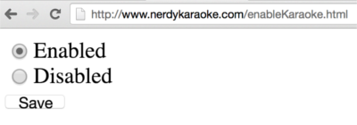
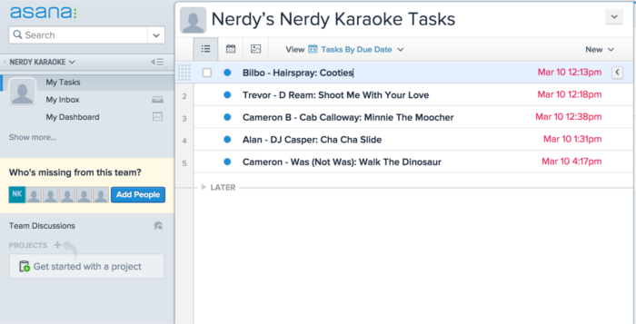
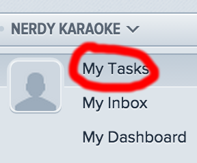
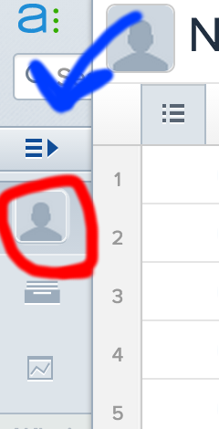
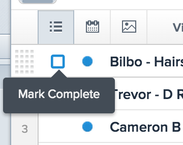

Karaoke sign ups are disabled by default. You can enable karaoke by going to:
http://www.nerdykaraoke.com/control/It looks like this:
Doing this will change a value that lets people sign up in the app. To turn off signups you'll need to go back and change it to disabled. If you want to see the current status of signups you can go here:
http://www.nerdykaraoke.com/control/isKaraoke.json"true" means enabled, "false" means disabled. Simple!
Karaoke is on tonight! The microphone is hooked up and people want to sing their hearts out! It's time to add people to Karaoki.
First off you need to sign into Asana. Go here:
https://app.asana.comYou'll need to sign in with the username and password I gave you. After that you'll see this screen:
This is the list of people that have signed up. It's basically the replacement for your piece of paper. The next step is to add them into Karaoki. Here's the format:
The time to the right is when that person signed up. New singers are added to the bottom of the list. The list doesn't quite update in real time. I recommend clicking on "My Tasks" on the left to make sure you're looking at the most up-to-date list:
Asana has a "condensed" layout that shows up if your browser window is smaller. In this case you can click on the little user icon to the left to update the list:
You can also click the icon with three lines and an arrow to expand the view.
When you're done adding a singer to Karaoki it's time to get them off the list. If you put your mouse over a singer you should see a little square show up next to their name:
Click on this square and POOF, they're gone. Don't click that until you've added them to Karaoki and they've sung!
Karaoke is over, which means you need to clean house. Two things need to be done:
I mean that's really just my suggestions. You're an adult, you live your own life! ;)
Obviously feel free to ask me any questions
CLICK ME FOR QUICK ACCESS LINKS